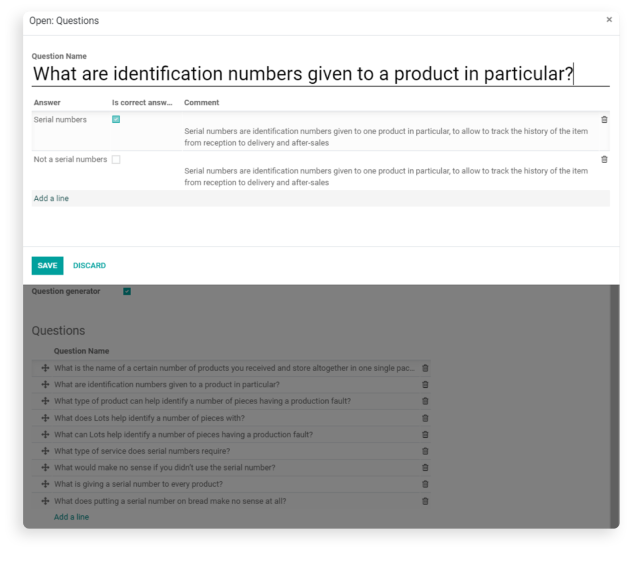

Overview
A combination of an eLearning app and Automatic Question Generation.
Automatic
Question Generation
(AQG) is the technique for generating a right set of questions from a content. Question
Generators use
trained machine learning algorithms to generate questions using some text information as the
input. Given
information is processed through the neural networks as a hidden step. As the output, we get
questions with
different variants of answers.
Key tools

Configuration
1. Once application is installed, you can enable necessary AQG in settings. You can reach here by Configuration/Settings. It is worth paying attention to required memory capacity, as each generation tool is quite different.
2. Once a user enables the generation feature in the settings, they can create the content with generated questions in it. New fields connected to generation feature pop up as a user checks the Question Generator field. Then, it is required to choose a Neural Network between the ones activated in the Settings. As a Splitter Option a user can choose a paragraph, sentence, full text or a customized one. By choosing a custom splitter, a user can identify the splitter symbol and split the text manually.
3. Once a user is ready with the text, they can press the Generate button.